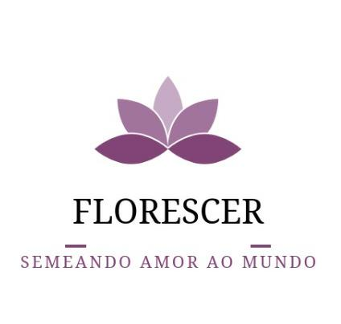
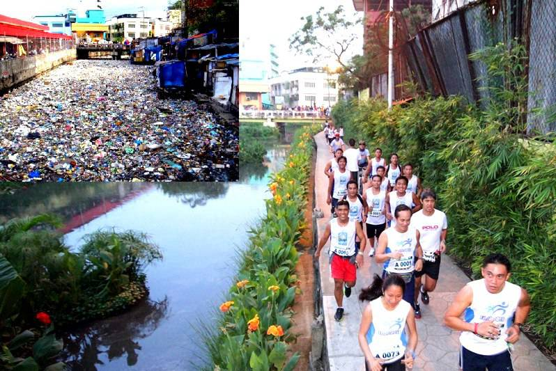
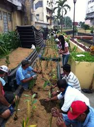
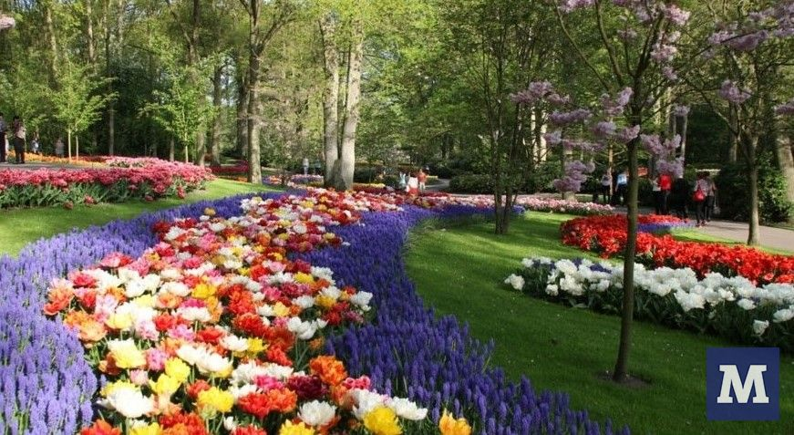

|  | Home | Quem somos |Midias Sociais | Projetos | Seja Membro | Contato | |
|  |  |  |
Organizamos em um projeto para melhorar o visual de rios poluidos, as plantas ajudam a filtrar a água e melhorar um pouco a qualidade do ar para a população, reunimos um multirão para ajudar na limpeza das margens e plantar nossas flores. Também fazemos a recuperação de praças, nosso foco é estar atuando próximos aos locais mais abandonados pela prefeitura como áreas de baixa renda. |
||